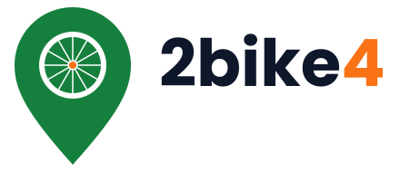

Tem uma bike parada em casa? Alguém perto de você precisa dela hoje. O 2bike4 junta as duas pontas — de pessoa para pessoa.
Ir para o app →Muita bike fica esquecida na garagem enquanto tanta gente procura um jeito barato e limpo de se locomover. O 2bike4 conecta proprietários e locatários da mesma cidade de forma simples e econômica: quem aluga economiza, quem anuncia ganha uma renda extra, e a cidade ganha menos carros e menos poluição.
Tudo pelo celular ou pelo computador, com o mapa no centro de tudo.
Veja no mapa as bikes disponíveis hoje perto de você, com preço da diária e avaliação de quem já alugou.
Escolha as datas, peça a reserva e pague pelo app assim que o dono confirmar.
Retire a bike, aproveite o passeio e, na volta, avalie: a reputação deixa todo mundo mais seguro.
Promover o transporte ativo e dar uso aos bens ociosos — alinhado a três Objetivos de Desenvolvimento Sustentável da ONU.
Incentivo ao transporte ativo e menos congestionamentos.
Uma bike compartilhada vale por várias compradas e paradas.
Cada trajeto de bike é um trajeto a menos emitindo gases poluentes.
Pesquisa com 20 potenciais usuários, entre donos de bike e quem quer alugar.
O que mais pesa na escolha: reputação de quem aluga, localização e segurança.
Vamos integrar oficinas credenciadas para agendar revisões técnicas e dar às bikes um selo digital de revisão — mais transparência, segurança e confiança para quem aluga.
Estudantes de Análise e Desenvolvimento de Sistemas do Centro Universitário Facens.
Professor orientador: Fernando Xavier